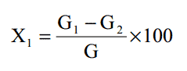
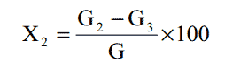

根据灼烧前后重量差，求得灼烧减量。在 550℃下灼烧前后的重量差表示有机物的含量。 550℃～950℃灼烧前后的重量差表示碳酸盐的含量。
1.箱式电阻炉： 1000℃。
2.电阻炉温度控制器： 0～1000℃。
3.分析天平：感量 0.0001g。
1. 550℃灼烧减量
在预先经 950±10℃灼烧至恒重的瓷坩埚中，称取经预处理后污垢样品 0.5g（称准至
0.0002g）， 将坩埚移入电阻炉内于 550±5℃下灼烧至恒重。
2. 550℃～950℃灼烧减量
将于 550℃下测定灼烧减量后的试样，移入电阻炉内于 950±10℃下，继续灼烧至恒重。
1. 550℃下灼烧减量 X1（ %）， 按下式计算：

式中： G1——灼烧前试样和坩埚的重量，克；
G2——经 550℃灼烧后试样和坩埚的重量，克；
G——试样的重量，克
2. 550℃～950℃灼烧减量 X2（ %）， 按下式计算：

式中： G2——550℃灼烧后试样和坩埚的重量，克；
G3——经 950℃灼烧后试样和坩埚的重量，克；
G——试样的重量，克。
平行测定两结果差不大于 0.5%
取平行测定两结果的算术平均值，作为污垢的灼烧减量。